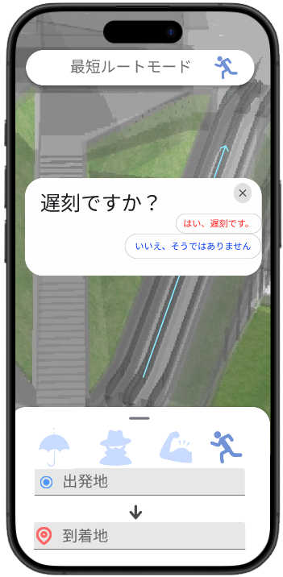
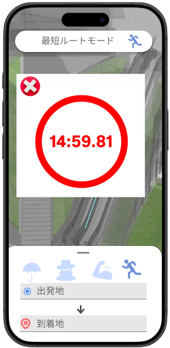
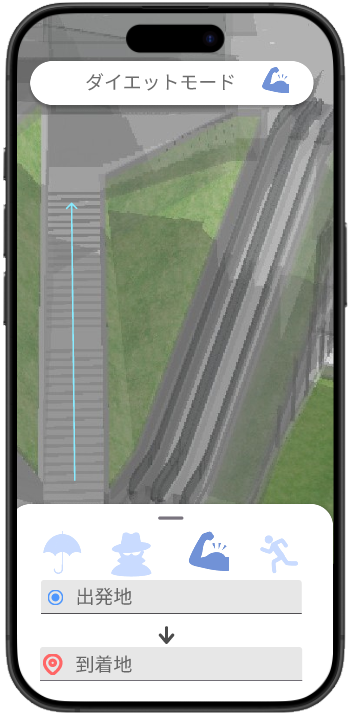
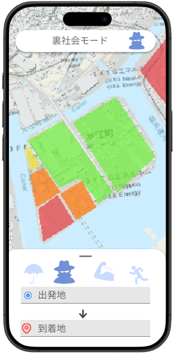
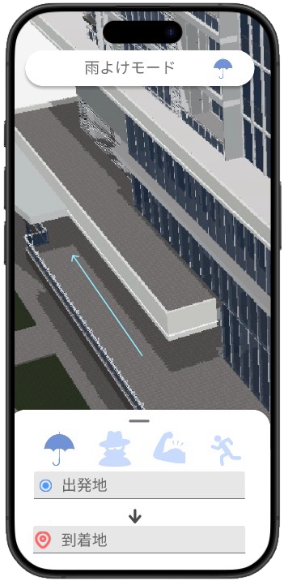

4つのモードで、神回避
-
⏱️
遅刻回避
信号・遠回りを避け、最短で到着
-
💪
体重増加回避
階段や歩数を優先、運動量アップ
-
🕶️
危険回避
夜道などリスクの高い場所を回避
-
🌂
雨回避
屋根・通路をつないで雨回避
クリックすると各モードの詳細を見られます。
急いでいる！ときに最短で目的地へ導くモードです。
PLATEAUの3D都市データを用いて信号の位置や階段の有無を考慮し、
最短経路をリアルタイムで再計算します。


- 信号・遠回りを自動的に回避
- エスカレーターや、早い道を優先
- 「緊急モード」では残り時間をカウントダウン表示
移動しながら運動したい！という人におすすめのモードです。
階段や坂道をあえて選び、PLATEAUの地形データを使用して、自然に運動量をアップします。

- 坂道や階段を優先したルート生成
- 1日の歩数目標を達成するナビゲーション
- 消費カロリーを推定して表示
安全第一で帰りたい！というときに最適なモードです。
犯罪発生マップや、街灯の位置データをもとに、危険エリアを自動で回避します。

- 犯罪情報マップと連携した安全ルート提案
- 夜間照明が少ないルートを除外
- 危険エリアを段階に分けて色分け
雨の日でも濡れたくない！という人のためのモードです。
PLATEAUの屋根データや地下道情報を活用し、屋根付き・屋内経路を自動で接続します。

- 建物のひさし・屋根・通路データを活用
- 地下道・商業施設内ルートを自動で接続
- 天候に応じて経路をリアルタイムで再計算